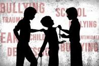

Agen Perubahan #Agen Perubahan
Mengenal Jenis-jenis Bullying Atau Perundungan
Perundungan adalah perilaku atau tindakan agresif yang melibatkan ketidakseimbangan kekuatan sehingga merugikan orang lain. Perilaku agresif ini dapat dilakukan berulang kali dan menyebabkan masalah yang serius pada orang yang di-bully
Berdasarkan situs resmi Stop Bullying Amerika Serikat, tindakan yang dikategorikan sebagai perundungan adalah tindakan yang agresif dan mengandung ketidakseimbangan kekuatan dan pengulangan. Ketidakseimbangan kekuatan itu diartikan sebagai orang yang menggunakan kekuatan mereka seperti kekuatan fisik, akses informasi yang memalukan, atau popularitas untuk mengendalikan atau membahayakan orang lain.
Ada banyak jenis penindasan yang dapat dialami oleh anak-anak maupun orang dewasa. Secara garis besar, perundungan dapat dibagi dalam beberapa jenis, berikut jenis-jenis bullying atau perundungan yang patut diwaspadai.
Perundungan fisik #Perundungan fisik
Perundungan fisik
Perundungan fisik adalah penindasan yang dilakukan dengan cara melibatkan fisik seperti melukai tubuh seseorang yang dapat menyebabkan efek jangka pendek dan jangka panjang. Perundungan fisik mencakup memukul, menendang, mencubit, mendorong, dan menghancurkan barang orang lain.
Perundungan verbal #Perundungan verbal
Perundungan verbal
perundungan verbal adalah intimidasi yang melibatkan kata-kata baik secara tertulis atau terucap. Perundungan secara verbal meliputi menggoda, memanggil nama yang tidak pantas, mengejek, menghina, dan mengancam
Perundungan sosial #Perundungan sosial
Perundungan sosial
Perundungan sosial adalah penindasan yang mengakibatkan merusak reputasi atau hubungan seseorang. Intimidasi sosial ini mencakup berbohong, menyebarkan rumor negatif, mempermalukan seseorang, dan mengucilkan seseorang.

Cyberbullying #Cyberbullying
Cyberbullying
Perundungan di dunia maya adalah perilaku intimidasi yang dilakukan menggunakan teknologi digital.Perundungan di dunia maya ini meliputi mengunggah gambar atau video yang tidak pantas, menyebar gosip secara online, dan menggunakan informasi orang lain di media sosial.


Penyebab Terjadinya Bullying Atau Perundungan
Salah satu pemicu seseorang melakukan bullying adalah karena memiliki masalah pribadi yang membuatnyatidak berdaya di hidupnya sendiri. Pada anak-anak,penyebab seperti perkelahian berlebihan dirumah,perceraian orang tua,atau adanya anggota kluarga yang menjadi pecandu narkoba dan alkohol dapat memicu hal ini.ada tindakan agresif secara fisik dan verbal yang dapat menyebabkan korbannya merasa tidaknyaman atau bahkan terluka.salah satu cara untuk mencegah perilaku bullying adalah memaahami penyebabnya
Apa Penyebab Bullyig Yang Perlu Diwaspadai?
Faktor penyebab bullying bisa datang dari lingkungan sosial,kluarga,hingga diri sendiri.Sebelum terlambat,berbagai penyebab terjadinya bullying yang perlu kamu ketahui.
1.Pernah Menyaksikan Dan Merasakan Kekerasan
Orang yang pernah menyaksikan dan merasakan kekerasan di rumah kebih beresiko melakukan tindakan bully kepada orang lain.Jila ada anggota keluarga yang melakukan bullying,jangan buru-buru menghakiminya.cari tahu apakah mereka sedang memiliki masalah internal dengan keluarganya.Apabil ini yang jadi penyebabnya,cobalah untuk memberikan mereka dukungan dan bimbingan.
2.Kurangnya Hubungan Dengan Orang Tua
Memiliki hubungan atau komunikasi yang buruk dengan orangtua dipercaya dapat membuat seorang anak berisiko melakukan tindakan bullying.Dengan memiliki hubungan yang erat dengan orangtua, si kecil diharapkan dapat memiliki rasa empati dan mengenalrasa kasih sayang. Dengan begitu, dirinya dipercaya tidak akan melakukan tindakan perundungan
3.Tidak Percaya Diri
Anak-anak yang tidak percaya diri cenderung akan melakukan bullying.Sebab, tindakan ini dapat membuat mereka merasa memiliki kekuatan dan dominasi.Tidak hanya itu, anak-anak yang tidak percaya diri ini juga cenderung berbohong mengenai kemampuan dirinya, demi menutupi rasa kurang percaya diri yang mereka miliki.
4.Kebiasaan Mengejek Orang
Kebiasaan mengejek orang lain dinilai sebagai faktor penyebab bullying menurut para ahli. Ejekan ini dapat mengarah pada penampilan, kemampuan, ras, budaya,dan hidup orang lain.Penindasan yang dilakukan oleh pelaku bullying ini sering kali datang dari rasa takut atau kurangnya pemahaman terhadap lingkungan di sekitarnya.
5.Ingin Menjadi Populer Dilingkungannya
Anak-anak yang ingin dikenal atau menjadi populer di lingkungannya dinilai berisiko melakukan tindakan bullying.Mereka akan menunjukkan sifat ingin memerintah,mengontrol, dan menuntut teman-temannya demi popularitas dan pengakuan dari orang-orang di sekitarnya.
6.Tidak Dibekali Pendidikan Empati
Minimnya bekal pendidikan empati dapat menjadi salah satu faktor penyebab terjadinya bullying.Tanpa empati, anak tidak bisa atau bahkan tidak mau mengerti apa yang dirasakan oleh orang lain. Mereka pun bisa menyalahkan korban-korbannya.Kurangnya rasa empati ini dapat membuat anak-anak merasa bahwa tindakan bullying-nya hanyalah candaan semata, di saat orang lain merasa sakit hati akibat tindakan tak terpuji itu.
7.Tidak Mendapatkan Yang Mreka Mau
Di saat anak-anak tidak mendapatkan apa yang mereka inginkan, mereka cenderung akan merasa frustrasi.Sebagian anak dapat menerima situasi ini dengan lapang dada. Namun, beberapa anak tidak kuat menahan perasaan tersebut. Hasilnya, mereka dapat melakukan tindakan bullying demi kepentingan pribadi.Umumnya, hal ini disebabkan oleh sifat perfeksionis. Sebagai orangtua, cobalah ajarkan kepada mereka bahwa segala sesuatu tidak harus menjadi sempurna.
8.Minimnya Perhatian Sekolah Terhadap Bullying
Faktor bullying di sekolah yang tak boleh disepelekan adalah kurangnya perhatian sekolah terhadap fenomena bullying.Fakto penyebab bullying menurut para ahli ini membuat siswa dan siswi menganggap bahwa tindakan bullying adalah hal yang biasa. Sehingga, mereka terus melakukannya di sekolah.Untuk mengatasinya, peran guru dan pihak sekolah lainnya sangat diperlukan. Sekolah disarankan untuk menanggapi masalah bullying secara serius.
9.Ekspos Kekerasan Dalam Media Sosial
Tak dapat dipungkiri bahwa media memiliki peran yang sangat penting dalam kehidupan manusia. Bahkan, media juga menjadi kebutuhan pokok yang harus dipenuhi.Mulai dari televisi, surat kabar dan bahkan media online mengandung topik yang berkembang begitu pesat. Tak heran, tindak kekerasan juga banyak ditemukan di media, seperti adegan dalam sinetron atau reality show yang menunjukan adegan kekerasan, bullying, game atau melalui sosial media. Pada dasarnya, anak-anak yang masih dalam tahap belajar dan memiliki rasa penasaran tinggi akan menirukan hal-hal yang mereka lihat tersebut tanpa menyaringnya.
10.Faktor Pubertas Dan Krisis Identitas
Faktor utama yang mencakup semua permasalahan yang telah disebutkan adalah faktor pubertas. Pubertas dan krisis identitas adalah hal yang normal terjadi di kalangan remaja. Dalam tahap mencari identitas dan juga eksistensi, biasanya para remaja hobi membentuk geng.Namun, ada geng yang normal, ada juga geng yang suka membuat onar dan melakukan hal-hal menyimpang.Biasanya, ada juga yang ingin menjadi kepala geng dengan mem-bully anggota gengnya demi mendapatkan kekuasaan yang ia inginkan.
11.Pola Asuh Dalam Kluarga
Tak salah jika banyak yang mengatakan bahwa keluarga adalah faktor utamapermasalahan yang terjadi pada anak karena keluarga merupakan pendidik pertama dan utama. Sikap bullying merupakan pengembangan dari sikap anak yang agresif. Mereka yang mengembangkan perilaku agresif tumbuh dalam pengasuhan yang tidak kondusif, mulai dari kedekatan yang tidak aman dengan pengasuhnya, tuntutan disiplin yang terlalu tinggi dari orang tuanya dan bahkan masalah hubungan kedua orang tuanya: konflik suami-istri, depresi, antisosial dan bahkan melakukan tindakan kekerasan di rumah.Hal tersebut menyebabkan sang anak merasa pelampiasan terhadap tekanannya tersebut. Nah, depresi tersebut bisa jadi dilampiaskan kepada teman yang lemah.
12.Riwayat Berkelahi
Anak yang hidup dalam lingkungan yang menyimpang dari norma, misalnya lingkungan yang sering berkelahi atau bermusuhan akan lebih mudah meniru perilaku lingkungan tersebut dan tidak merasa bersalah saat melakukan hal yang sama. Bahkan, sang anak bisa cenderung merasa biasa saja dan tidak merasa melanggar norma. Hal ini dilakukan demi menunjukan kepada orang lain bahwa mereka merupakan golongan superior, berkuasa dan bisa mendapatkan pujian dari banyak orang
Dampak Buruk Akibat Bullying
Dampak buruk akibat dari bullying tidak hanya dirasakan korbannya,tapi juga pelakunya. Berikut adalah penjelasan mengenai efek negatif dari tindakan perundungan.
Dampak Buruk Akibat Bullying Yang DiRasakan Korban:
1.Mengalami gangguan mental, seperti depresi, gangguan kecemasan, merasa sedih, dan kesepian.
2.Perubahan pola tidur dan makan
3.Berkurangnya ketertarikan untuk melakukan hobi atau aktivitas yang disenangi
4.Masalah kesehatan
5.Menurunnya performa akademis.
Dampak Buruk Akibat Bullying Yang Dirasakan Pelaku:
1.Penyalahgunaan alkohol dan obat-obatan terlarang, terutama pada pelaku bully remaja dan dewasa
2.Rentan berkelahi, merusak properti, dan dikeluarkan dari sekolah
3.Berisiko melakukan hubungan seks di usia muda
4.Melakukan tindakan kekerasan
Cara Untuk Mencegah Bullying
1.Berbicara Dengan Anak
Salah satu tindakan pertama yang perlu dilakukan untuk mengatasi bullying adalah berbicara dengan anak Anda.Jika Anda melihat ada sesuatu yang tidak biasanya pada anak, cobalah ajak ia berbicara.Pasalnya, korban bullying sering kali tidak mau berbicara tentang pengalamannya ketika dirundung. Perhatikan perasaan anak dan buat mereka tahu bahwa kedua orangtuanya sangat peduli kepadanya.
2.Menjadi Panutan Bagi Anak
Supaya anak tidak menjadi pelaku bullying di lingkungannya, orangtua perlu menjadi role model atau panutan yang baik untuknya.Pasalnya, pelaku bullying sering kali melakukan tindakan tak terpujinya itu karena melihat perilaku bullying di sekitarnya, entah itu dari orangtua, teman-teman, atau bahkan adegan-adegan film yang mereka tonton di televisi.Cobalah berikan contoh perilaku sosial yang baik kepada anak-anak sejak dini. Dengan begitu, mereka diharapkan dapat terhindar dari perilaku bullying ketika beranjak dewasa.
3.Mensosialisasikan dampak bullying kepada anak-anak
Adanya sosialisasi terkait dampak dan bahaya bullying menjadi salah satu kunci penting untuk menghentikan kasus perundungan di lingkungan.Orangtua, guru, atau masyarakat secara umum perlu mensosialisasikan bahaya bullying dan tindakan apa saja yang termasuk dalam kategori bullying.Selain itu, orangtua, guru, dan masyarakat secara umum disarankan untuk mengetahui cara merespons kasus bullying dan bagaimana cara mencegahnya agar tidak ada lagi korban yang berjatuhan.
4.Jangan berdiam diri saat ada kasus perundungan di sekitar kita
Terkadang, orang-orang di sekitar tidak tahu harus berbuat apa ketika melihat tindakan bullying di sekitar. Jika terus dibiarkan, hal ini justru bisa membuat kasus bullying semakin marak.Orangtua, teman-teman,guru, dan masyarakat secara umum perlu bergerak dan melakukan inisiatif ketika melihat kasus bullying di sekelilingnya.
5.Berbicara dengan pelaku bullying
Tidak hanya fokus kepada korban kita juga perlu berbicara dengan pelaku bullying untuk menghentikan tindakan perundungan.Pelaku bullying umumnya melakukan tindakan tak terpuji ini karena tidak memiliki rasa empati atau memiliki masalah keluarga di rumah. Jika ini kasusnya, bantulah mereka untuk mengatasi masalah tersebut. Selain itu, pelaku bullying juga perlu memahami bahwa tindakan mereka termasuk dalam kategori bullying. Kemudian, mereka juga harus tahu bahwa perundungan dapat membahayakan kesehatan mental dan bahkan fisik korbannya.
macam-macam perundungan
| perundungan fisik | Perundungan fisik adalah penindasan yang dilakukan dengan cara melibatkan fisik seperti melukai tubuh seseorang yang dapat menyebabkan efek jangka pendek dan jangka panjang. Perundungan fisik mencakup memukul, menendang, mencubit, mendorong, dan menghancurkan barang orang lain. |
| perundungan verbal | Perundungan verbal adalah intimidasi yang melibatkan kata-kata baik secara tertulis atau terucap. Perundungan secara verbal meliputi menggoda, memanggil nama yang tidak pantas, mengejek, menghina, dan mengancam |